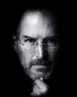

Steve Jobs (1955-2011) foi um empresário norte-americano, fundou a Apple. Criou o "Macintosh", o "iPod", o "iPhone" e o "iPad". A Apple revolucionou a indústria de computadores pessoais, os filmes de animação, o mundo da música e dos telefones celulares.
Steve Paul Jobs (1955-2011) nasceu em São Francisco, Califórnia, no dia 24 de fevereiro de 1955. Filho do sírio Abdulfattah Jandali e de Joanne Schieble foi adotado, por Paul Jobs, mecânico e membro da Guarda Costeira e da contadora Carla Jobs. A família morava em Mountain View, na Califórnia, dentro da área que mais tarde se tornaria conhecida como Vale do Silício. Ainda pequeno, viu seu pai montar e desmontar aparelhos eletrônicos na garagem da família.
Depois do curso básico, Jobs cursou a Homestead High School entre 1968 e 1972. Nessa época, conheceu Steve Wozniak (1950), que estudava na Universidade da Califórnia, em Berkley e, era especialista em fazer programas e circuitos integrados.
Concluído o curso médio, Jobes, matriculou-se na Reed College. Depois de seis meses abandonou o curso, mas continuou frequentando a faculdade, como ouvinte, das aulas de caligrafia, que posteriormente destacou como importante para sua formação.
Em 1976, Jobs e Wozniak instalaram uma “fabrica” de computadores, na garagem da casa da família de Jobs na Califórnia. Em 1976 é lançado o computador "Apple I", o primeiro computador pessoal, vendido já montado, que era apenas uma placa mãe coberta com alguns chips e instalada em uma caixa de madeira.
Em 1977 é lançado o computador "Apple II", que apresentava um mouse e um disco rígido interno. Com o passar dos anos, as criações de Jobs e Wozniak revolucionaram a indústria de computadores, tornando as máquinas menores e mais baratas.
Em janeiro de 1984 é lançado o "Macintosh" apelidado de "torradeira bege", que esquentava muito, pois não tinha ventilador. Apesar do sucesso das vendas e do desempenho superior aos PCs da IBM, o Macintosh não era compatível com a IBM. Centralizador e explosivo, nesse mesmo ano, Steve Jobs é afastado de sua própria empresa, por divergir das táticas de vendas.
Em 2003, Steve Jobs foi diagnosticado com um câncer raro. Descoberto no início, mas Jobs se negou a fazer a cirurgia e optou por fazer tratamentos alternativos. Durante nove meses adiou a cirurgia, que só foi realizada em 2004, para remover um tumor no pâncreas.
Em 2009, sua saúde estava fragilizada, Jobs havia perdido muito quilos. Em um e-mail enviado aos funcionários, Jobs revelou: “problemas de saúde são mais complexos do que se pensava”. Nesse mesmo ano, nomeou Tim Cook para diretor de operações da Apple. Em janeiro de 2011, anunciou que estava saindo de licença médica. Em agosto ele renunciou o cargo de CEO e em outubro faleceu.
A Apple Inc. está localizada em Cupertino, uma das cidades que formam o Vale do Silício na Califórnia. O slogan da Apple é "Pense diferente". Várias frases de Steve ficaram famosas, entre elas "A jornada é a recompensa", "É melhor ser um pirata do que se juntar à Marinha".
Steve Jobs faleceu em Palo Alto, Califórnia, Estados Unidos, no dia 5 de outubro de 2011.